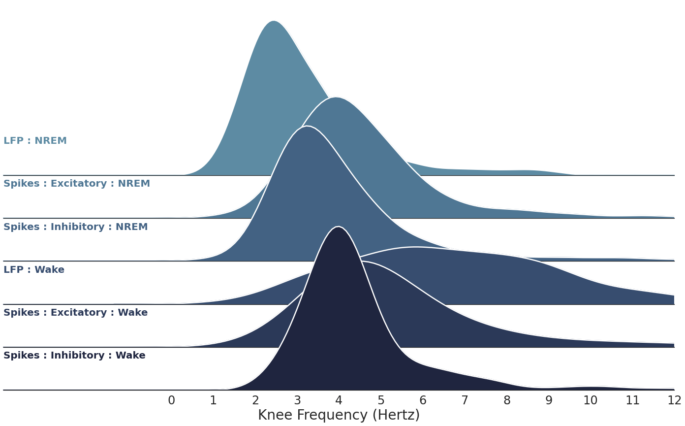

Figure 4. Sleep vs. Wake
Contents
[1]:
import os.path as op
import matplotlib.pyplot as plt
import seaborn as sns
import numpy as np
from scipy.io import loadmat
from scipy.stats import ttest_ind, ttest_rel, pearsonr
from neurodsp.utils.norm import normalize_sig
from timescales.fit import PSD
from timescales.autoreg import compute_ar_spectrum
from timescales.plts import set_default_rc
from timescales.utils import create_windows
set_default_rc()
Figure 4. Sleep vs. Wake#
The timescales, as knee frequencies, are compared between 4 types of spike trains and the local field potential:
Wake : Excitatory Units
NREM : Excitatory Units
Wake : Inhibitory Units
NREM : Inhibitory Units
LFP Wake
LFP NREM
[2]:
def compute_spectra_trials(spikes_e, spikes_i, start_end, f_range,
bin_size, ar_order, kwargs_ar=None):
"""Compute Welch's and AR PSD for exciatatory and inhibitory spikes."""
# Ensure unpackable
if kwargs_ar is None:
kwargs_ar = {}
# Compute AR-PSD and Welch's-PSD for each window
for ind, (s, e) in enumerate(start_end):
# Normalize
spikes_bin_e = normalize_sig(
spikes_e[s:e].reshape(-1, bin_size).sum(axis=1), 0, 1)
spikes_bin_i = normalize_sig(
spikes_i[s:e].reshape(-1, bin_size).sum(axis=1), 0, 1)
# Compute excitatory spectra
freqs_ar, powers_ar_e = compute_ar_spectrum(spikes_bin_e, fs/bin_size, ar_order,
f_range=f_range, **kwargs_ar)
# Compute inhibitory spectra
_, powers_ar_i = compute_ar_spectrum(spikes_bin_i, fs/bin_size, ar_order,
f_range=f_range, **kwargs_ar)
# Initalize arrays
if ind == 0:
freqs = {'ar': freqs_ar}
powers = {
'ar': {'excitatory': np.zeros((len(start_end), len(powers_ar_e))),
'inhibitory': np.zeros((len(start_end), len(powers_ar_i)))}
}
powers['ar']['excitatory'][ind] = powers_ar_e
powers['ar']['inhibitory'][ind] = powers_ar_i
return freqs, powers
[3]:
# Load data
base_name = '20140526_277um'
dir_path = f'/home/rph/Projects/timescale-methods/fcx1/{base_name}'
subtype_dict = loadmat(f'{dir_path}/{base_name}_SSubtypes.mat')
subtype_e = subtype_dict['Se_CellFormat'][0]
subtype_i = subtype_dict['Si_CellFormat'][0]
fs = 20000
n_seconds = np.ceil(max([*[np.max(i) for i in subtype_i],
*[np.max(i) for i in subtype_e]]))
times = np.arange(0, n_seconds, 1/fs)
# Extract behavioral data
beh_file = f'{dir_path}/{base_name}_WSRestrictedIntervals.mat'
beh = loadmat(beh_file)
nrem = beh['SWSPacketTimePairFormat'].astype(int) * fs
wake = beh['WakeTimePairFormat'].astype(int) * fs
# Window by trial type
win_len = int(5*fs)
win_spacing = int(5*fs)
wake_starts, wake_mids, wake_ends = create_windows(wake, win_len, win_spacing)
nrem_starts, nrem_mids, nrem_ends = create_windows(nrem, win_len, win_spacing)
start_end_wake = np.vstack((wake_starts, wake_ends)).T
start_end_nrem = np.vstack((nrem_starts, nrem_ends)).T
AR-PSD#
The AR spectra are influences by the bin size and the AR order parameters. These parameters will influence the resulting timescales measurements. These spectra follow a Lorentzian form.
[4]:
# Sum spikes across E/I sub-units
spikes = np.zeros((2, int(n_seconds * fs)))
for sind, subtype in enumerate([subtype_e, subtype_i]):
for s in subtype:
spikes[sind, (s[:, 0] * fs).astype(int)] = 1
spikes_e = spikes[0]
spikes_i = spikes[1]
# Compute Spectra
f_range = (0, 100)
bin_size = 200
ar_order = 5
freqs_wake, powers_wake = compute_spectra_trials(
spikes_e, spikes_i, start_end_wake, f_range, bin_size, ar_order
)
freqs_nrem, powers_nrem = compute_spectra_trials(
spikes_e, spikes_i, start_end_nrem, f_range, bin_size, ar_order
)
Fit Spectra: Spikes#
[5]:
fooof_init = {
'aperiodic_mode': 'knee_constant',
'max_n_peaks': 4,
'peak_threshold': 2.5
}
bounds = [
[-10, 1e-3, 1e-3, 1e-20],
[ 10, 20, 10, 1e-2]
]
guess = [-2, 1, 1, 1e-2]
psd_ex_nrem = PSD(freqs_nrem['ar'], powers_nrem['ar']['excitatory'])
psd_ex_nrem.fit(method='fooof', fooof_init=fooof_init, bounds=bounds, guess=guess,
n_jobs=-1, progress='tqdm.notebook')
psd_in_nrem = PSD(freqs_nrem['ar'], powers_nrem['ar']['inhibitory'])
psd_in_nrem.fit(method='fooof', fooof_init=fooof_init, bounds=bounds, guess=guess,
n_jobs=-1, progress='tqdm.notebook')
psd_ex_wake = PSD(freqs_wake['ar'], powers_wake['ar']['excitatory'])
psd_ex_wake.fit(method='fooof', fooof_init=fooof_init, bounds=bounds, guess=guess,
n_jobs=-1, progress='tqdm.notebook')
psd_in_wake = PSD(freqs_wake['ar'], powers_wake['ar']['inhibitory'])
psd_in_wake.fit(method='fooof', fooof_init=fooof_init, bounds=bounds, guess=guess,
n_jobs=-1, progress='tqdm.notebook')
Spike Stats#
The NREM trials have a significantly higher r-squared values, compared to the wake trails. Comparing the timescales between the two may be confounded by this.
[6]:
# R-squared stats
print('Spike R-Squared Statistics\n')
print('Excitatory Wake: ', 'mean =', psd_ex_wake.rsq_full.mean(),
'std =', psd_ex_wake.rsq_full.std())
print('Excitatory NREM: ', 'mean =', psd_ex_nrem.rsq_full.mean(),
'std =', psd_ex_nrem.rsq_full.std())
print('Inhibitory Wake: ', 'mean =', psd_in_wake.rsq_full.mean(),
'std =', psd_in_wake.rsq_full.std())
print('Inhibitory NREM: ', 'mean =', psd_in_nrem.rsq_full.mean(),
'std =', psd_in_nrem.rsq_full.std())
print()
print('Excitatory: Wake vs NREM')
print(ttest_ind(psd_ex_wake.rsq_full, psd_ex_nrem.rsq_full))
print()
print('Inhibitory: Wake vs NREM')
print(ttest_ind(psd_in_wake.rsq_full, psd_in_nrem.rsq_full))
print()
print('Wake: Excitatory vs Inhibitory')
print(ttest_ind(psd_ex_wake.rsq_full, psd_in_wake.rsq_full))
print()
print('NREM: Excitatory vs Inhibitory')
print(ttest_ind(psd_ex_nrem.rsq_full, psd_in_nrem.rsq_full))
Spike R-Squared Statistics
Excitatory Wake: mean = 0.8237961930445714 std = 0.2165613580105497
Excitatory NREM: mean = 0.9551133739885479 std = 0.0603757437890658
Inhibitory Wake: mean = 0.7760963792622833 std = 0.23944804910263517
Inhibitory NREM: mean = 0.9661529198146298 std = 0.04790972635594994
Excitatory: Wake vs NREM
Ttest_indResult(statistic=-13.386164016678734, pvalue=1.35224023375709e-37)
Inhibitory: Wake vs NREM
Ttest_indResult(statistic=-17.912471149298536, pvalue=3.90499537291248e-62)
Wake: Excitatory vs Inhibitory
Ttest_indResult(statistic=3.0494139674328213, pvalue=0.0023638115434466036)
NREM: Excitatory vs Inhibitory
Ttest_indResult(statistic=-3.312942925626916, pvalue=0.0009541012302210045)
[7]:
# Knee freq stats
print('Spike Knee Frequency Statistics\n')
print('Excitatory Wake: ', 'mean =', psd_ex_wake.knee_freq.mean(),
'std =', psd_ex_wake.knee_freq.std())
print('Excitatory NREM: ', 'mean =', psd_ex_nrem.knee_freq.mean(),
'std =', psd_ex_nrem.knee_freq.std())
print('Inhibitory Wake: ', 'mean =', psd_in_wake.knee_freq.mean(),
'std =', psd_in_wake.knee_freq.std())
print('Inhibitory NREM: ', 'mean =', psd_in_nrem.knee_freq.mean(),
'std =', psd_in_nrem.knee_freq.std())
print()
print('Excitatory: Wake vs NREM')
print(ttest_ind(psd_ex_wake.knee_freq, psd_ex_nrem.knee_freq))
print()
print('Inhibitory: Wake vs NREM')
print(ttest_ind(psd_in_wake.knee_freq, psd_in_nrem.knee_freq))
print()
print('Wake: Excitatory vs Inhibitory')
print(ttest_ind(psd_ex_wake.knee_freq, psd_in_wake.knee_freq))
print()
print('NREM: Excitatory vs Inhibitory')
print(ttest_ind(psd_ex_nrem.knee_freq, psd_in_nrem.knee_freq))
Spike Knee Frequency Statistics
Excitatory Wake: mean = 6.510950551944465 std = 4.246369610003782
Excitatory NREM: mean = 4.648572040370361 std = 2.09479811903976
Inhibitory Wake: mean = 4.9346724778701345 std = 2.5163170714229937
Inhibitory NREM: mean = 4.060590712098375 std = 1.993919717180862
Excitatory: Wake vs NREM
Ttest_indResult(statistic=8.877601649374666, pvalue=3.2896066288641537e-18)
Inhibitory: Wake vs NREM
Ttest_indResult(statistic=6.00776424501637, pvalue=2.6662281322938156e-09)
Wake: Excitatory vs Inhibitory
Ttest_indResult(statistic=6.591249288074879, pvalue=7.637748207776019e-11)
NREM: Excitatory vs Inhibitory
Ttest_indResult(statistic=4.702579432003745, pvalue=2.904517412488611e-06)
Spikes vs LFPs#
Spike versus LFP timescale comparison.
[8]:
# Load LFP
data_id = '20140526_277um'
data_dir = f'/home/rph/Projects/timescale-methods/fcx1/data_mats/{data_id}'
fs = 1250
# Infer shape using one channel
lfp_file = op.join(data_dir, 'data01.mat')
sig_len = len(loadmat(lfp_file)['data'][0])
# Get PFC channels
channels = list(range(17, 49))
sig_lfp = np.zeros(sig_len)
for cind, ch in enumerate(channels):
lfp_file = op.join(data_dir, f'data{ch}.mat')
sig_lfp += loadmat(lfp_file)['data'][0]
sig_lfp = sig_lfp / len(channels)
sig_lfp = normalize_sig(sig_lfp, 0, 1)
times = np.arange(0, len(sig_lfp)/fs, 1/fs)
# Windows
nrem = beh['SWSPacketTimePairFormat'].astype(int) * fs
wake = beh['WakeTimePairFormat'].astype(int) * fs
# Window by trial type
win_len = int(5*fs)
win_spacing = int(5*fs)
wake_starts, wake_mids, wake_ends = create_windows(wake, win_len, win_spacing)
nrem_starts, nrem_mids, nrem_ends = create_windows(nrem, win_len, win_spacing)
start_end_wake = np.vstack((wake_starts, wake_ends)).T
start_end_nrem = np.vstack((nrem_starts, nrem_ends)).T
# Create 2d arrays
sig_lfp_wake = np.array([sig_lfp[s:e] for s, e in
zip(wake_starts, wake_ends)])
sig_lfp_nrem = np.array([sig_lfp[s:e] for s, e in
zip(nrem_starts, nrem_ends)])
Fit Spectra: LFP#
[9]:
fooof_init = {
'aperiodic_mode': 'knee_constant',
'max_n_peaks': 4,
'peak_threshold': 2.5
}
bounds = [
[-10, 1e-3, 1e-3, 1e-20],
[ 10, 20, 10, 1e-2]
]
guess = [-2, 1, 1, 1e-2]
psd_lfp_wake = PSD()
psd_lfp_wake.compute_spectrum(sig_lfp_wake, fs, f_range=(0, 100), ar_order=10)
psd_lfp_wake.fit(method='fooof', fooof_init=fooof_init, bounds=bounds, guess=guess,
n_jobs=-1, progress='tqdm.notebook')
psd_lfp_nrem = PSD()
psd_lfp_nrem.compute_spectrum(sig_lfp_nrem, fs, f_range=(0, 100), ar_order=10)
psd_lfp_nrem.fit(method='fooof', fooof_init=fooof_init, bounds=bounds, guess=guess,
n_jobs=-1, progress='tqdm.notebook')
Plot#
[10]:
def plot_overlapping_densities(df, xlim, overlap_hspace=-.5):
sns.set_theme(style="white", rc={"axes.facecolor": (0, 0, 0, 0)})
# Initialize the FacetGrid object
pal = sns.cubehelix_palette(6, rot=-.25, light=.5)
grid = sns.FacetGrid(df, row="labels", hue="labels", aspect=10,
height=2, palette=pal, xlim=xlim)
# Draw the densities in a few steps
grid.map(sns.kdeplot, "knees", clip_on=True,
fill=True, alpha=1, linewidth=2)
grid.map(sns.kdeplot, "knees", clip_on=True, color="w", lw=2.5, bw_adjust=1)
grid.refline(y=0, linewidth=2, linestyle="-", color=None, clip_on=False)
# Label the plot in axes coordinates
def label(x, color, label):
ax = plt.gca()
ax.text(0, .2, label, fontweight="bold", color=color,
ha="left", va="center", transform=ax.transAxes, size=20)
grid.map(label, "knees")
# Set the subplots to overlap
grid.figure.subplots_adjust(hspace=overlap_hspace)
# Remove axes details that don't play well with overlap
grid.set_titles("")
grid.set(yticks=[], ylabel="")
grid.set(xticks=np.arange(0, xlim[1]+1))
grid.despine(bottom=False, left=True)
grid.set_xticklabels(np.arange(0, xlim[1]+1), size=24)
grid.set_xlabels('Knee Frequency (Hertz)', size=28)
return grid
[11]:
import pandas as pd
# Apply r-squared threshold
rsq_thresh = .25
nrem_inds = np.where(
(psd_ex_nrem.rsq > rsq_thresh) &
(psd_in_nrem.rsq > rsq_thresh) &
(psd_lfp_nrem.rsq > rsq_thresh)
)[0]
wake_inds = np.where(
(psd_ex_wake.rsq > rsq_thresh) &
(psd_in_wake.rsq > rsq_thresh) &
(psd_lfp_wake.rsq > rsq_thresh)
)[0]
# Merge knees
knees = np.concatenate([
psd_lfp_nrem.knee_freq[nrem_inds],
psd_ex_nrem.knee_freq[nrem_inds],
psd_in_nrem.knee_freq[nrem_inds],
psd_lfp_wake.knee_freq[wake_inds],
psd_ex_wake.knee_freq[wake_inds],
psd_in_wake.knee_freq[wake_inds]
])
# Merge labels
labels = [
*['LFP : NREM'] * len(nrem_inds),
*['Spikes : Excitatory : NREM'] * len(nrem_inds),
*['Spikes : Inhibitory : NREM'] * len(nrem_inds),
*['LFP : Wake'] * len(wake_inds),
*['Spikes : Excitatory : Wake'] * len(wake_inds),
*['Spikes : Inhibitory : Wake'] * len(wake_inds)
]
# To dataframe
df = pd.DataFrame(dict(knees=knees, labels=labels))
[13]:
# Plot
plot_overlapping_densities(df, (-4, 12), overlap_hspace=-0.75)
plt.savefig('fig05_sleep_vs_wake.png', dpi=300, facecolor='w');

[14]:
print('Wake')
print(f'LFP : mean={psd_lfp_wake.knee_freq[wake_inds].mean()}, '\
f'std={psd_lfp_wake.knee_freq[wake_inds].std()}')
print(f'Spikes, Excitatory: mean={psd_ex_wake.knee_freq[wake_inds].mean()}, '\
f'std={psd_ex_wake.knee_freq[wake_inds].std()}')
print(f'Spikes, Inhibitory: mean={psd_in_wake.knee_freq[wake_inds].mean()}, '\
f'std={psd_in_wake.knee_freq[wake_inds].std()}')
print()
print(f'NREM')
print(f'LFP : mean={psd_lfp_nrem.knee_freq[nrem_inds].mean()}, '\
f'std={psd_lfp_nrem.knee_freq[nrem_inds].std()}')
print(f'Spikes, Excitatory: mean={psd_ex_nrem.knee_freq[nrem_inds].mean()}, '\
f'std={psd_ex_nrem.knee_freq[nrem_inds].std()}')
print(f'Spikes, Inhibitory: mean={psd_in_nrem.knee_freq[nrem_inds].mean()}, '\
f'std={psd_in_nrem.knee_freq[nrem_inds].std()}')
Wake
LFP : mean=6.8001364891954, std=2.656403888980302
Spikes, Excitatory: mean=6.15023882411311, std=3.816180868647709
Spikes, Inhibitory: mean=4.5061781442512405, std=1.6995762892176098
NREM
LFP : mean=3.1374131726642167, std=1.4539461558915583
Spikes, Excitatory: mean=4.622147400058879, std=2.005520664967615
Spikes, Inhibitory: mean=4.061209976351796, std=1.9957308268995413
[15]:
print('Wake vs NREM')
print('LFP : ', ttest_ind(psd_lfp_wake.knee_freq[wake_inds],
psd_lfp_nrem.knee_freq[nrem_inds]))
print('Excitatory: ', ttest_ind(psd_ex_wake.knee_freq[wake_inds],
psd_ex_nrem.knee_freq[nrem_inds]))
print('Inhibitory: ', ttest_ind(psd_in_wake.knee_freq[wake_inds],
psd_in_nrem.knee_freq[nrem_inds]))
print()
print('Wake')
print('LFP vs Excitatory:', ttest_rel(psd_lfp_wake.knee_freq[wake_inds],
psd_ex_wake.knee_freq[wake_inds]))
print('LFP vs Inhibitory:', ttest_rel(psd_lfp_wake.knee_freq[wake_inds],
psd_in_wake.knee_freq[wake_inds]))
print()
print(f'NREM')
print('LFP vs Excitatory:', ttest_rel(psd_lfp_nrem.knee_freq[nrem_inds],
psd_ex_nrem.knee_freq[nrem_inds]))
print('LFP vs Inhibitory:', ttest_rel(psd_lfp_nrem.knee_freq[nrem_inds],
psd_in_nrem.knee_freq[nrem_inds]))
Wake vs NREM
LFP : Ttest_indResult(statistic=26.21179265308087, pvalue=4.76513474449946e-112)
Excitatory: Ttest_indResult(statistic=7.709989328694835, pvalue=3.438514642092187e-14)
Inhibitory: Ttest_indResult(statistic=3.38372695420238, pvalue=0.000747082004084111)
Wake
LFP vs Excitatory: Ttest_relResult(statistic=2.576773510327446, pvalue=0.010400209973630595)
LFP vs Inhibitory: Ttest_relResult(statistic=13.76100417988951, pvalue=1.837967809311979e-34)
NREM
LFP vs Excitatory: Ttest_relResult(statistic=-15.57977377129755, pvalue=2.1891548411738475e-45)
LFP vs Inhibitory: Ttest_relResult(statistic=-12.6061404963828, pvalue=4.4365469496275713e-32)
[16]:
print('Correlation')
print('Wake: LFP vs Excitatory: r={:.4f}, p={:.4f}'.format(
*pearsonr(psd_lfp_wake.knee_freq[wake_inds], psd_ex_wake.knee_freq[wake_inds]))
)
print('Wake: LFP vs Inhibitory: r={:.4f}, p={:.4f}'.format(
*pearsonr(psd_lfp_wake.knee_freq[wake_inds], psd_in_wake.knee_freq[wake_inds]))
)
print()
print('NREM: LFP vs Excitatory: r={:.4f}, p={:.4f}'.format(
*pearsonr(psd_lfp_nrem.knee_freq[nrem_inds], psd_ex_nrem.knee_freq[nrem_inds]))
)
print('NREM: LFP vs Inhibitory: r={:.4f}, p={:.4f}'.format(
*pearsonr(psd_lfp_nrem.knee_freq[nrem_inds], psd_in_nrem.knee_freq[nrem_inds]))
)
Correlation
Wake: LFP vs Excitatory: r=0.0153, p=0.7802
Wake: LFP vs Inhibitory: r=0.0704, p=0.1979
NREM: LFP vs Excitatory: r=0.2206, p=0.0000
NREM: LFP vs Inhibitory: r=0.5564, p=0.0000